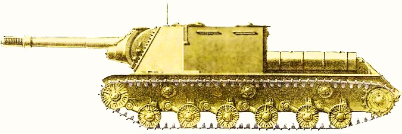

Дополнительная информация
Меню
Рассмотрим фракции танков в историческом контексте, обращая внимание на их развитие, основные модели и влияние на военные конфликты.
- Советская фракция
Советский Союз разработал множество моделей танков, которые сыграли значительную роль в мировой истории, особенно во время Второй мировой войны. Ключевыми моделями стали:
- Т-34: Этот средний танк стал одним из самых известных и эффективных танков войны. Он сочетал в себе хорошую броню, маневренность и мощное орудие. Его конструкция оказала большое влияние на дальнейшие разработки танков по всему миру.
- ИС-2 и ИС-3: Тяжелые танки, которые имели превосходное вооружение и броню. Они были предназначены для борьбы с немецкими тяжеловесами, такими как Тигр и Пантер.
- Немецкая фракция
Немецкие танки известны своей инженерной точностью и качеством. Наиболее значимые модели:
- Пантера (Panther): Средний танк, который сочетал в себе хорошую броню и мощное 75-мм орудие. Пантера была очень эффективной на поле боя и использовалась с большим успехом.
- Тигр (Tiger): Тяжелый танк с мощной 88-мм пушкой и толстой броней. Тигр стал символом немецкой танковой мощи, хотя и страдал от проблем с маневренностью и надежностью.
- Американская фракция
США разработали различные модели танков, которые продемонстрировали свою эффективность в бою:
- M4 Шерман: Один из самых массовых танков Второй мировой войны. Шерман был универсальным средним танком, который сочетал в себе простоту производства и хорошую боевую эффективность.
- M26 Першинг: Этот тяжелый танк был создан для борьбы с немецкими тяжеловесами и был введен в бой в конце войны, демонстрируя превосходные характеристики.
- Британская фракция
Британские танки отличались оригинальными конструкциями и инновациями:
- Матильда II: Этот тяжелый танк, использовавшийся в начале Второй мировой войны, имел отличную броню, что делало его практически неуязвимым для многих противотанковых средств.
- Комет: Средний танк, который имел хорошую маневренность и мощное орудие, стал важной частью британских танковых сил в конце войны.

Обратим внимание на выдающийся советский танк "ИСУ-152 Зверобой", его характеристики:
-
Огневая мощь
- Бронепробиваемость: 156 мм
- Время перезаряди орудия: 25,4 с
- Скорострельность: 2,36 выстр/мин
- Боезапас: 36 шт
-
Мобильность
- Масса: 46,69 т
- Мощность двигателя: 700 л.с.
- Максимальная скорость: 43 км/ч
- Скорость поворота: 21 град/с
- Скорость горизн. наведения 26 град/с
-
Живучесть
- Бронироваие корпуса: 90 / 90 / 60 мм
-
Наблюдение